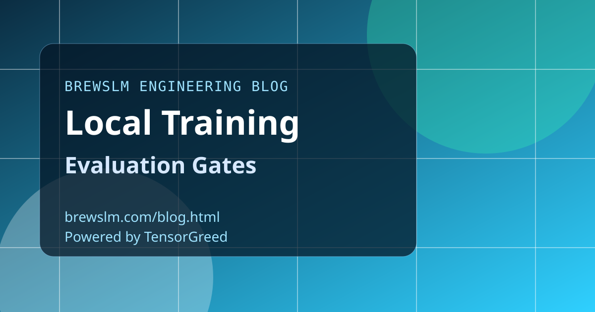

Define task-specific gold sets early
Gold sets should be ready before training starts, not after the first promising checkpoint. Task-specific coverage is critical for useful gate signals. The earlier you define gold sets, the less rework you create later.
Evaluate every checkpoint with consistent policy
Automate evaluation on scheduled checkpoints and record results in a comparable format. Consistent policy enables trend analysis and early regression detection. Manual spot checks alone are too noisy for release decisions.
Use side-by-side comparison to reduce bias
Compare current runs against accepted baselines using identical prompts and scoring contracts. Side-by-side views expose subtle degradation that raw averages can hide. Promotion decisions should be evidence-based, not intuition-based.
Block promotion on failed gates
If required metrics fail, keep artifacts out of staging and production. This protects downstream teams from unstable model versions. Gates only work when they are enforced automatically and consistently.